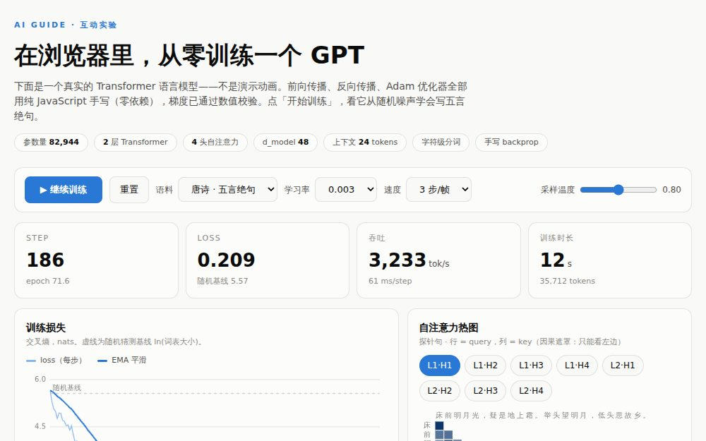
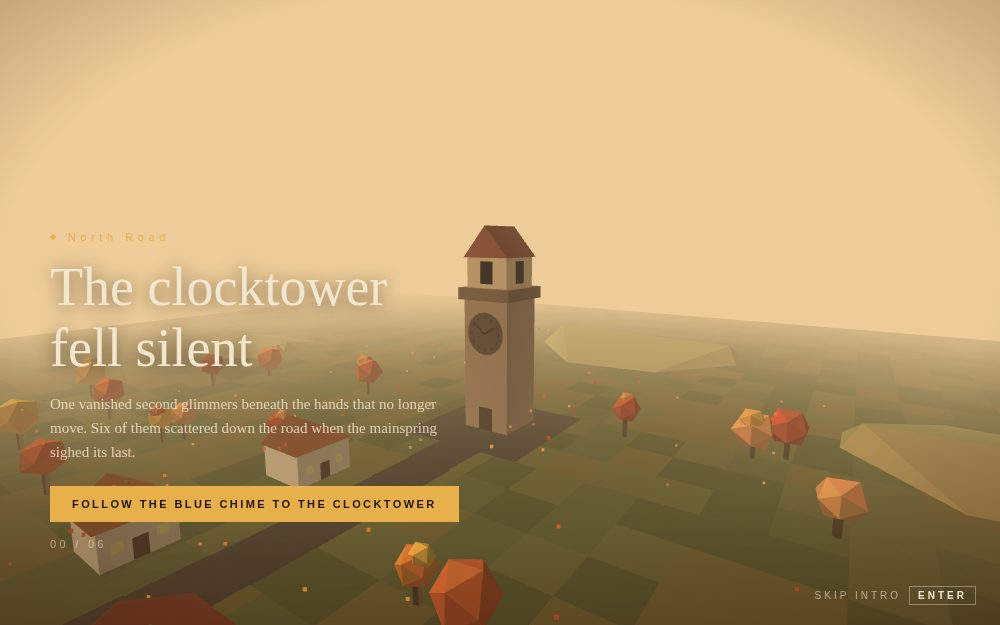
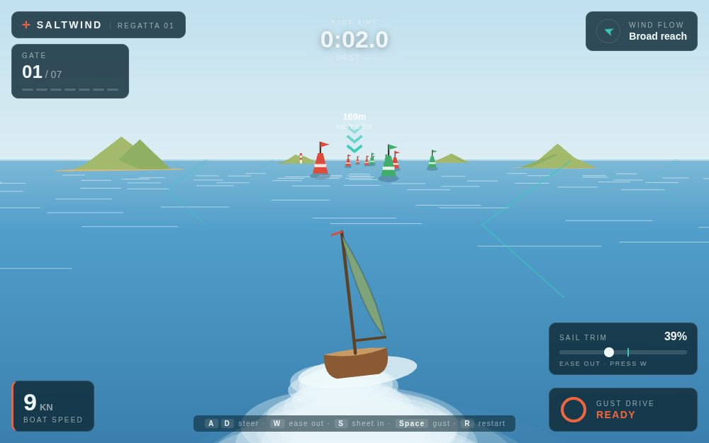
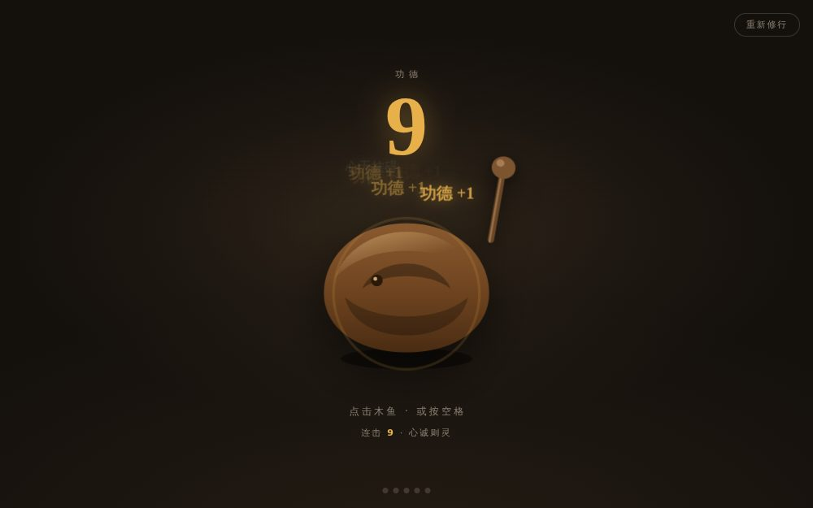

最硬核🧠在浏览器里从零训练一个 GPT
不是可视化演示，是真的在训练神经网络。8.3 万参数的 Transformer， 前向传播、反向传播、Adam 优化器全部纯 JS 手写，梯度用中心差分校验过（最大相对误差 2.3e-6）。 实时看 loss 从 5.57 砸到 0.2、注意力热图长出格律条纹、生成样本从乱码变成唐诗。
开始训练
手写 3D 引擎🕰️The Clocktower Fell Silent
第一人称探索小游戏。因为不能外链 Three.js，整个 3D 引擎从零手写： 矩阵数学、着色器、平面着色光照、指数雾效、低多边形几何生成器。 钟楼停摆了，循着蓝色风铃找回 6 颗消失的秒，让大钟重新鸣响。
进入村庄
真实帆船物理⛵SALTWIND 帆船竞速
Canvas 伪 3D 海面上的绕标计时赛。用真实的帆船极曲线建模： 顶风会停（In irons），横风最快，帆角要贴住最优刻度才吃满风。 7 道浮标门，蓄力阵风爆发加速，成绩本地保存。
起航
解压小品🪷电子木鱼 · 摸鱼积功德
点一下功德 +1，配合合成出来的「笃」声和飘字禅语： 「班味 −1」「KPI 皆空」「周五将至」。敲到 108 下解锁「烦恼尽消」， 1000 下「在线成佛」。功德本地保存，明天接着敲。
开始敲